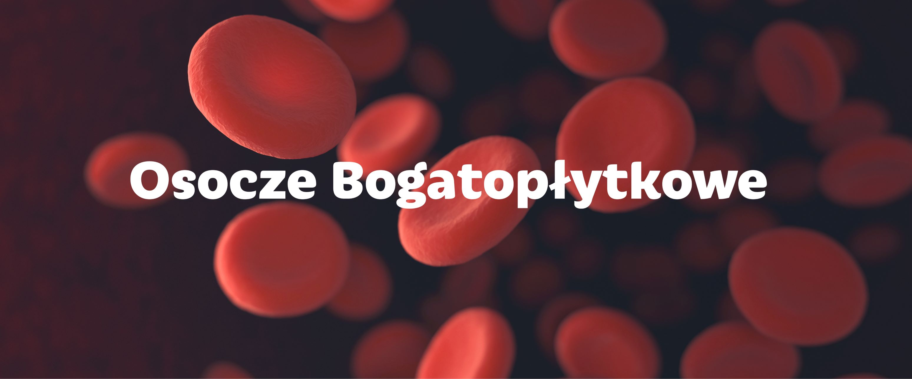

Leczenie osoczem
Osocze bogatopłytkowe - nowoczesna metoda regeneracji tkanek
Co to właściwie jest?
Leczenie urazów za pomocą osocza bogatopłytkowego jest jednym z najnowocześniejszych sposób wykorzystywanych w ortopedii – nie jest to metoda zarezerwowana tylko dla sportowców. Dolegliwość zwana łokciem tenisisty może wynikać z czasu jaki spędzamy pracując z komputerem – takich dolegliwości jest dużo więcej.
Często zadajemy sobie pytanie jak to jest, że piłkarz po ciężkim urazie wraca do gry w ciągu kilku tygodni?
Odpowiedź na to pytanie jest prosta – są oni leczeni za pomocą innowacyjnych metod np. z wykorzystaniem osocza bogatopłytkowego. Ta dziedzina ortopedii nazywana bardzo często jest ortopedią regeneracyjną bowiem skupia się na odbudowie uszkodzonych struktur. Najprościej rzecz ujmując podanie osocza zmusza organizm do rozpoczęcia samoistnych procesów naprawczych – dzięki temu w uszkodzonej strukturze następuje proces regeneracji. Osocze bogatopłytkowe radzi sobie z wieloma popularnymi urazami. Dotychczas zgłaszając się do ortopedy z urazem typu naderwanie, przeciążenie - najczęstszą stosowaną metodą było leczenie farmakologiczne polegające na podawanie leków przeciwbólowych, przeciwzapalnych lub w poważniejszych przypadkach leków opartych na sterydach. W wielu przypadkach było to działanie, które owszem niwelowało ból, ale hamowało również procesy naprawcze. W dłuższej perspektywie czasu mogło powodować również osłabienie struktur. W przypadku leczenia osoczem stymulujemy proces naprawczy tkanki – wymuszamy to na naszym organizmie.
Jak wygląda zabieg z wykorzystaniem osocza?
Pierwszym etapem jest pobranie niewielkiej ilości krwi od Pacjenta, która następnie zostaje odwirowana w specjalnie przystosowanej do tego wirówce – po tym etapie otrzymujemy koncentrat płytek krwi zwany właśnie osoczem bogatopłytkowym. Głównym etapem jest podanie osocza bogatopłytkowego w formie zastrzyku do leczonego miejsca. Wstrzyknięty koncentrat płytek krwi silnie stymuluje proces naprawczy tkanek – daje to szybkie i trwałe efekty. W przypadku stosowania osocza bogatopłytkowego pacjenci stosują mniej leków przeciwbólowych. Jest to bardzo ważne ponieważ należy pamiętać, że takie leki obciążają naszą wątrobę. Leczenie osoczem jest bardzo cenioną metodą wśród osób amatorsko uprawiających sport – pomaga ona bowiem na szybszy powrót do sprawności i treningu.
W naszym centrum współpracujemy z firmą Arthrex – pionierem w zakresie leczenia osoczem bogatopłytkowym. Od wielu lat z powodzeniem stosujemy tę metodę u naszych Pacjentów o czym świadczą pozytywne opinie na jej temat.
Leczenie urazów za pomocą osocza bogatopłytkowego jest jednym z najnowocześniejszych sposób wykorzystywanych w ortopedii – nie jest to metoda zarezerwowana tylko dla sportowców. Dolegliwość zwana łokciem tenisisty może wynikać z czasu jaki spędzamy pracując z komputerem – takich dolegliwości jest dużo więcej.
Często zadajemy sobie pytanie jak to jest, że piłkarz po ciężkim urazie wraca do gry w ciągu kilku tygodni?
Odpowiedź na to pytanie jest prosta – są oni leczeni za pomocą innowacyjnych metod np. z wykorzystaniem osocza bogatopłytkowego. Ta dziedzina ortopedii nazywana bardzo często jest ortopedią regeneracyjną bowiem skupia się na odbudowie uszkodzonych struktur. Najprościej rzecz ujmując podanie osocza zmusza organizm do rozpoczęcia samoistnych procesów naprawczych – dzięki temu w uszkodzonej strukturze następuje proces regeneracji. Osocze bogatopłytkowe radzi sobie z wieloma popularnymi urazami. Dotychczas zgłaszając się do ortopedy z urazem typu naderwanie, przeciążenie - najczęstszą stosowaną metodą było leczenie farmakologiczne polegające na podawanie leków przeciwbólowych, przeciwzapalnych lub w poważniejszych przypadkach leków opartych na sterydach. W wielu przypadkach było to działanie, które owszem niwelowało ból, ale hamowało również procesy naprawcze. W dłuższej perspektywie czasu mogło powodować również osłabienie struktur. W przypadku leczenia osoczem stymulujemy proces naprawczy tkanki – wymuszamy to na naszym organizmie.
Jak wygląda zabieg z wykorzystaniem osocza?
Pierwszym etapem jest pobranie niewielkiej ilości krwi od Pacjenta, która następnie zostaje odwirowana w specjalnie przystosowanej do tego wirówce – po tym etapie otrzymujemy koncentrat płytek krwi zwany właśnie osoczem bogatopłytkowym. Głównym etapem jest podanie osocza bogatopłytkowego w formie zastrzyku do leczonego miejsca. Wstrzyknięty koncentrat płytek krwi silnie stymuluje proces naprawczy tkanek – daje to szybkie i trwałe efekty. W przypadku stosowania osocza bogatopłytkowego pacjenci stosują mniej leków przeciwbólowych. Jest to bardzo ważne ponieważ należy pamiętać, że takie leki obciążają naszą wątrobę. Leczenie osoczem jest bardzo cenioną metodą wśród osób amatorsko uprawiających sport – pomaga ona bowiem na szybszy powrót do sprawności i treningu.
W naszym centrum współpracujemy z firmą Arthrex – pionierem w zakresie leczenia osoczem bogatopłytkowym. Od wielu lat z powodzeniem stosujemy tę metodę u naszych Pacjentów o czym świadczą pozytywne opinie na jej temat.